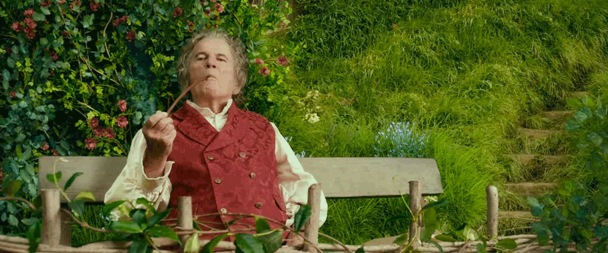

"The Hobbit," penned by J.R.R. Tolkien, unfolds the adventurous journey of Bilbo Baggins, a content hobbit who prefers a tranquil life, filled with comfort and routine. His peaceful existence is disrupted when he is unexpectedly drawn into an epic quest by Gandalf the wizard and a band of dwarves. Their daring mission is to recapture their stolen treasure and kingdom from the cunning dragon, Smaug. This journey takes Bilbo far from the Shire, through enchanted forests, towering mountains, and ominous caverns, where he encounters a myriad of creatures, including trolls, elves, goblins, and giant spiders.
In the process of this incredible journey, Bilbo stumbles upon a magical ring which holds powers beyond his comprehension. This ring grants the wearer invisibility, allowing Bilbo to navigate through perilous situations, ultimately playing a crucial role in the success of their quest. Bilbo’s encounters with different beings and the overcoming of unimaginable challenges demonstrate his evolving wit, bravery, and self-reliance. The transformation from a reluctant, comfort-loving hobbit to a key figure in a grand adventure illustrates the profound impact of stepping into the unknown.
J.R.R. Tolkien, a renowned author and philologist, created a magnificent world in his Middle-earth legendarium, featuring a rich tapestry of languages, cultures, and histories. His works, including "The Hobbit," reflect his profound love for mythology, linguistics, and nature. Tolkien served as a Lieutenant in the First World War, and his experiences in the war deeply influenced his writing, echoing themes of friendship, sacrifice, and the enduring battle between good and evil.
The overarching theme of Tolkien's work is the enduring human spirit and the constant battle between the forces of good and evil. His stories, deeply rooted in mythological and religious themes, often explore the corrupting influence of power and the redeeming qualities of mercy and compassion. "The Hobbit" serves as a beacon of Tolkien’s overarching theme, showcasing the journey of self-discovery and the realization of potentials that one was oblivious to. It's a tale that continues to inspire and captivate, inviting readers to reflect on their inner strengths and the boundless possibilities of personal growth.
When it comes to food, hobbits have a rich culinary tradition. One of the most beloved dishes among the hobbits of the Shire is Seedcake. Here's a simple recipe to make this delightful treat:
Preheat the oven to 350°F (175°C). In a bowl, cream together butter and sugar until smooth. Add the eggs one by one, followed by the flour and baking powder. Mix in the caraway seeds last. Pour the mixture into a greased pan and bake for 25-30 minutes until golden brown. Let it cool, slice, and enjoy with a cup of tea!